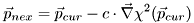

![\[ \chi^2(\vec{p})=\sum\limits_{i=1}^N\frac{\bigl(y_i-m(\tau_i, \vec{p})\bigr)^2}{\sigma_i^2} \]](form_213.png)
levmar is an open source implementation of the Levenberg-Marquardt fitting algorithm which is widely used in different open source projects.
The next lines will give a short (and basic) description of the Levenberg-Marquardt method, as it is also described in
[PRE92] Press, W. H., Teukolsky, S. A., Vetterling, W. T. und Flannery, B. P.: Numerical Recipes in C. The Art of Scientific Computing. 2. Auflage, Cambridge University Press, Cambridge - New York - Port Chester - Melbourne - Sydney, 1992
We start from a least-squares score function
which we want to minimize with respect to the M parameters  , i.e. we want to solve the minimization problem
, i.e. we want to solve the minimization problem
with the N measured data points  .
.
To do so we first note that it should be possible to approximate  by a quadratic form, if the local interval we look at is small enough. In this approximative case we have:
by a quadratic form, if the local interval we look at is small enough. In this approximative case we have:
Here  is the gradient of the function in the optimum
is the gradient of the function in the optimum  which has to be 0 for an extremum.
which has to be 0 for an extremum.  is the Hessian matrix or the matrix of the second derivatives also evaluated at .
is the Hessian matrix or the matrix of the second derivatives also evaluated at .
If this approximation is valid, one may jump to the minimum of this quadratic form in one single leap. Say the current parameter estimation is  , then the optimal parameter vector is
, then the optimal parameter vector is
This result may be optained from the above approximation if you demand  to vanish at
to vanish at  Note that
Note that  and
and  have to be known constants, so the algorithm has to estimate these to do the jump.
have to be known constants, so the algorithm has to estimate these to do the jump.
If the above approximation is not valid we can not do much more than do a leap in the direction of the steepest descent:

Here c denotes a positive constant which influences the jump size.
The Levenberg-Marquardt method is designed to vary smoothly between the
two extremal cases described here. It uses the fact that the form of
the function  is known to be a quadratic form. So it is easy to estimate the first and second dervative if if the user provides the derivatives of the model function
is known to be a quadratic form. So it is easy to estimate the first and second dervative if if the user provides the derivatives of the model function 
This implementation of the Levenberg-Marquardt scheme uses numerical methods to calculate the gradient, so it is not neccessary to know an analytic form of the derivatives. Levmar estimates the derivatives with the central difference scheme which is slower, but mor accurate than the standard forward/backward schemes.
![\[ \min\limits_{\vec{p}}\chi^2(\vec{p}) \]](form_214.png)
![\[ \chi^2(\vec{p})\approx \gamma+\vec{d}\cdot\vec{p}+\frac{1}{2}\vec{p}\cdot\underline{H}\cdot\vec{p} \]](form_265.png)
![\[ \vec{p}_{opt}=\vec{p}_{cur}+\underline{H}^{-1}\cdot\bigl[-\vec{\nabla}\chi^2(\vec{p}_{cur})\bigr]. \]](form_262.png)